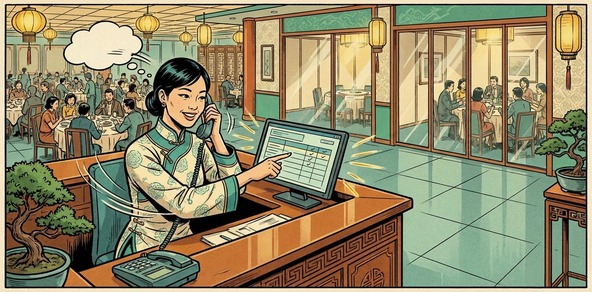

By Lee Yih Ven · Published 3 November 2026

Designed for Jade Star Chinese Dining 吉星饭厅, whose six private rooms take December 2026 bookings by a web form, by chat, and by customers' own AI agents. Every route must follow the same rules: the right room for the party, no room booked twice, and nothing confirmed until the customer says so. A room held for a booking nobody confirms is a room the restaurant cannot sell.
I built a restaurant agent that greets guests and prepares bookings, in chat or with a customer's own AI agent over A2A, an open agent-to-agent standard. Code checks the rules, holds the right room for 15 minutes and texts a 6-digit code, and the web form uses the same rules with no AI. The AI never confirms a booking, and it hands every request the rules cannot settle to the restaurant manager.
The restaurant manager sees every handover and every confirmation on one owner dashboard, and calls the guest when a person is needed. In testing, the system passed all 20 booking cases from an answer key written before it was built, covering form, chat and agent bookings, refusals, handovers and confirmations. Replay them, or try the form and the chat live, on the booking desk.
| Value proposition | Customer Experience |
|---|---|
| Problem type | Customer service |
| Problem | A restaurant takes private room bookings by web form, by chat and from customers' own AI agents. Every booking must follow the same rules, and a room held for a booking nobody confirms cannot be sold. |
| Built | A restaurant booking agent takes bookings by chat and from customers' AI agents through A2A, and the form books with no AI. One set of booking rules in code holds the room for 15 minutes, only the customer's SMS code confirms it, and the restaurant manager takes every handover. |
| Evidence | All 20 booking cases from an answer key written before the build passed with none of the seven safety limits broken, scored from the record of what the system did. A further 92 tests that need no API key also pass. Before real users, Version 1 still needs a staff sign-in, a real SMS service, a hosted A2A endpoint, a security review, a monitoring owner and a rollback plan. |
Three ways to book, one booking system, and one confirmation step on every route. Left out here: a slot that is not available, and a wrong code (in What It Does and the Technical tab).
The form, the chat and a customer's AI agent all reach the same booking code. It books the four daily December slots at least 2 hours ahead, offers a bigger room when the right size is full, and adds the RM 100 fee to the bill at check-out. The same phone asking twice for one slot with the same party size gets the same reference, while different details go to the manager.
A code is refused when it is wrong, entered after 15 minutes, entered after the party size changed, or entered after another booking took the room. A wrong code leaves the room held, and a late code releases it for another guest. A customer's AI agent is told the room is held, waits for its person to confirm, then receives the booking number.
Code fills each handover note with the guest's name, phone, booking details and own words, under one of 11 fixed reasons, and writes the reply. On the live form, such a request is refused with its reason and the guest is asked to phone. Every confirmation, accepted or refused, is sent to the manager too.
A customer's AI agent asks, for its person, for a room for 5 on Wed 16 Dec at 4pm. Both 6-guest rooms are taken, so code holds the Tulip Room 郁金香厅 for 8, and the agent waits for its person to confirm. The person enters the code on their own phone, the booking is confirmed, and the agent's task completes with the booking number.
Each run was scored from the record of what the system did, never from the reply wording, against an answer key written before the system was built. All 20 booking cases passed, with none of the seven safety limits broken.
| Test category | What it checks | Passed | One example |
|---|---|---|---|
| A. Own job | The form, the agent in chat, or the restaurant agent answering a customer's AI agent, holds a room or answers by the rules, with no person deciding. | 8 of 8 | A guest asks for a room for 4 at 9pm. Code refuses the time and the guest hears the four booking times still free that day. |
| B. Unauthorised | A confirmation without a valid code. It is refused, and the restaurant manager is told. | 2 of 2 | A code entered 16 minutes after it was sent is refused, and the Orchid Room 兰花厅 is released for another guest. |
| C. Handover | A request only a person can settle. The agent hands it to the restaurant manager under a fixed reason, and the request waits for the manager's call. | 7 of 7 | A party of 12 is more than any private room seats, so no room is held and the restaurant manager will call the guest. |
| D. Workflow | Each party does its part in order: a route holds the room, the customer confirms, and the restaurant manager receives a notice. | 3 of 3 | The guest confirms the chat booking for 8 with the right code, and it lands on the owner dashboard as a Chat booking with the RM 100 fee due at check-out. |
A further 92 automated tests cover what no case reaches: the 15-minute release with no click, a confirmation after the party size changed, a room taken by another booking before the code is entered, the same phone and slot with different details, every refusal, what the AI may and may not do, the replies written in code, and the check on every AI reply. All 92 pass. Every run, step by step, is in the Technical Implementation tab.
These tests show the system holds, refuses, hands over and confirms by the restaurant's rules in every tested case. Time saved at the front desk, rooms filled and the share of bookings made with no staff involved are what a working restaurant would measure.
| Page | What you can do |
|---|---|
| Booking desk | Replay all 20 recorded cases with no key, book live by form with no key, or chat live with your own API key. Confirm, refuse or let a hold expire on the customer's phone, and act on handovers as the restaurant manager. |
| Restaurant Policy | The 14 booking rules: season, slots, rooms, the cut-off, the hold, the fee and what stays with the manager. |
| Room and Table Guide | The six private rooms by name and size, and the walk-in tables that are never booked. |
| Booking Calendar | December 2026, the business hours and the four daily slots. |
| Handover Guide | The 11 handover reasons and the note the restaurant manager receives. |
| Answer Key | The 20 booking cases and what each must do, written before the system. |
Live chat runs on your own Anthropic API key, and every message is billed to you. Use a key you can revoke, with a low spending limit. It stays in the page's memory and is sent only in calls from your browser to Anthropic; a public service would keep the key on its own server.
The system is designed to take bookings from people and from their AI agents under one set of rules, with only the customer confirming and every request the rules cannot settle passed to the restaurant manager. If that fits your front desk, or you are evaluating the work, try the demo or message me.
| Layer | Components |
|---|---|
| Agent | Claude Haiku 5.5 (benchmarked) · One restaurant agent, one prompt with the four resources · Anthropic Messages API by fetch (Node and browser) · tool_choice auto, one tool call at a time · Prompt caching |
| Booking | One booking module, lib/booking.js · Four tools in tools.js · PreToolUse and PostToolUse hooks · Confirm, release and close kept out of the AI's reach |
| Protocols | MCP server (stdio), four resources and four tools, for other MCP clients · A2A server, @a2a-js/sdk 1.3.0, Agent Card and JSON-RPC · Sample customer agent as an A2A client |
| Pages and Data | Vanilla HTML and JavaScript · JSON data files · Node generators · GitHub Pages |
build_pages.mjs writes each as a page with a link per clause; restaurant.json holds the values code reads.generate_data.mjs writes 19 sample confirmed bookings across December, the sample customers and the A2A requests. The test clock is Monday 14 December 2026, 2:00pm.lib/booking.js holds availability, the hold, the release, the confirmation, the duplicate rule, handovers and the manager's actions, and runs in Node and the browser.tools.js wraps the module in four tools behind the two hooks. The A2A server, the benchmark and the demo call it directly. An MCP server with the same four tools and four resources is included; it is not on the tested path.a2a/server.mjs serves the Agent Card and the A2A tasks around the restaurant agent; the sample customer agent in a2a/customer_agent.mjs books for one person per case.demo.html shows the bookings coming in by route on the left, the owner dashboard and seating map on the right, and the customer's phone for the code. It replays every recorded case, runs the form live, and runs the chat live with the visitor's own key.One agent. The restaurant side is a single agent with four tools: chat and A2A end in the same three steps on the same records (check the room, hold it, wait for the code). The customer's AI agent belongs to the other party, with its own principal; the sample customer agent here is a caller only, and only what reaches the restaurant agent is tested.
One agent on Claude Haiku 5.5 reads the guest's or the customer agent's message, chooses a tool, and writes a greeting on the first reply, then at most two short sentences. The prompt carries the rules and one worked example per path, with the four resources appended as they are, cached between calls; in the recorded final full run 202,348 input tokens were read from the cache, 8,458 were written to it and 18,200 were neither (results-final.json, usage). Limits of 1200 output tokens per call and 8 rounds stop a turn from looping.
Every call uses tool_choice "auto" with one tool call at a time. A handover, and the refusals for a time that is not a booking slot, no free room, a repeat request and an unknown reference, end the turn with a fixed sentence from PostToolUse, shown as it is with no further model call; for the other refusals the AI writes the reply, which is checked. Every other reply is checked in code against the reply rules and sent back at most twice with the exact fix; a reply that ends without the handover a refusal needs is sent back once.
| Route | Who books | AI involved | Ends at |
|---|---|---|---|
| Form | A person on the website | None: the form calls the same proposal function as the tool | A held room and the code on the customer's phone |
| Chat | A person on the website | The restaurant agent | A held room and the code on the customer's phone |
| A2A | A customer's AI agent for one person | The customer's agent and the restaurant agent | A held room; the task waits in input-required until the person confirms |
The customer agent's message opens a task (submitted, then working). A held room or a question leaves it in input-required; the person's confirmation moves it to completed with the booking number; a handover completes it with the handover note and no booking; a hold released after 15 minutes moves it to failed. The person's name and phone travel in the message metadata in a fixed form, { customer: { name, phone } }, never in the text.
Every handover goes to one receiver, the restaurant manager, under one of 11 fixed reasons: party over 10, less than 2 hours before the slot, change or cancellation of a confirmed booking, special request, date outside December 2026, party size changed after the code was sent, booking service down, confirmation failed, same phone and slot sent again with different details, complaint, customer asks for a person. The AI raises 10 of them; confirmation failed is written by the confirmation screen. Code fills each note with the reason, the receiver, the guest's name and phone, the date, the slot, the party size, the held room if any, the route and the guest's own words; the AI writes only the reason and a one-line summary.
| Resource (read) | Holds |
|---|---|
policy://restaurant | P1 to P14: season, hours, slots, private rooms, room by party size, over 10, walk-in tables, the 2-hour cut-off, what a booking records, one booking per phone per slot, the 15-minute hold, the RM 100 fee, late arrival, after booking. |
guide://rooms | The six private rooms by name and size (Orchid and Rose for 6, Tulip and Lotus for 8, Sakura and Sunflower for 10), which party fits which room, and the walk-in courts that are never booked. |
calendar://december-2026 | 1 to 31 December 2026, open 10am to 10pm daily, the slots 10am, 1pm, 4pm and 7pm of 3 hours each, the 2-hour cut-off. |
guide://handover | The 11 handover reasons, all to the restaurant manager, and the fields each note carries. |
| Tool (act) | Does | Refusal codes (from the code) |
|---|---|---|
check_availability | The room size offered and the rooms free for a date, slot and party size, the next size up when full; if none, the other free slots that day. | INVALID_SLOT MISSING_DETAILS NO_ROOM OUTSIDE_SEASON PARTY_TOO_LARGE SERVICE_DOWN TOO_SOON |
create_proposal | Runs every check again and the one-booking-per-phone-per-slot rule, then holds the room 15 minutes and sends the 6-digit code to the customer's phone. Name, phone and route come from the host. | ALREADY_HELD DUPLICATE_CONFLICT INVALID_SLOT MISSING_DETAILS NO_ROOM OUTSIDE_SEASON PARTY_TOO_LARGE SERVICE_DOWN TOO_SOON |
get_proposal_status | Held (minutes left), confirmed (booking number) or released, only for a hold opened in this conversation or A2A task. | NOT_FOUND |
hand_to_manager | A handover card for the restaurant manager under one fixed reason; code fills the note and returns the fixed sentence for the guest. | INVALID_REASON MISSING_DETAILS |
PreToolUse can refuse any call with TOOL_NOT_ALLOWED, NO_HOST_CONTEXT or CODE_IN_ARGUMENT. Confirming, releasing and closing are not tools: the customer's screen, the 15-minute release and the manager's dashboard buttons do them.
Every call, refused or run, returns one shape: { tool, status, data, error, next_step }. This is what create_proposal returned in case 13:
{
"tool": "create_proposal",
"status": "ok",
"data": {
"proposal_ref": "JS-H1001",
"status": "held",
"room": "Tulip Room 郁金香厅",
"date": "2026-12-16",
"date_label": "Wed 16 Dec 2026",
"slot": "16:00",
"slot_label": "4pm",
"party_size": 5,
"hold_minutes": 15,
"expires_at": "2026-12-14T14:15",
"minutes_left": 15,
"fee": "RM 100 booking fee, added to the bill at check-out; nothing is paid now",
"code_sent_to": "012-***6713",
"upsized": true
},
"error": null,
"next_step": {
"say": "Tulip Room 郁金香厅 is held for the person on Wed 16 Dec 2026 at 4pm for 5 guests. A 6-digit code has gone to the person's phone, so please enter it within 15 minutes to confirm; the RM 100 booking fee is added to the bill at check-out.",
"end": false
}
}| Business problem | Design choice | Where in the code |
|---|---|---|
| Rules copied into each channel drift apart, so a form and a chat could book the same room differently. | One booking module holds every rule. The form, the four tools, the confirmation screen and the A2A server all call it. | lib/booking.js; tools.js submitForm |
| A booking an agent confirms on its own commits the restaurant to something the guest never approved. | No tool confirms. Only the customer's screen calls confirm, with the code bound to that exact hold, within 15 minutes, on an unchanged hold, with the room still free; it commits once. | lib/booking.js confirm; hooks/pre_tool_use.js |
| An empty room held for an unconfirmed booking is revenue lost. | Every hold lasts 15 minutes. With no click it is released, and a late code is refused. | lib/booking.js sweep, confirm |
| A party seated in a room too small, or a hall table promised that is walk-in only, spoils the evening. | Code picks the room by party size, offers the next size up when full and never a smaller one; only the six private rooms can be held. | lib/booking.js freeRooms; resources/restaurant.json |
| A booking outside the season, outside the slots or too close to the slot cannot be served. | Code refuses each with a coded error: December 2026 only, 10am, 1pm, 4pm or 7pm, and at least 2 hours ahead. Out of season and too soon go to the restaurant manager. | lib/booking.js check |
| The same guest sending a request twice could hold two rooms. | One booking per phone per slot on any route: the same details return the existing reference, different details go to the restaurant manager. | lib/booking.js existingFor, propose |
| An agent that writes the guest's name or phone could book in someone else's name. | Name, phone and route come from the host, never from the AI: the chat session, the form, or the A2A message's fixed customer field. PreToolUse removes them from tool arguments and blocks any argument carrying a 6-digit code. | hooks/pre_tool_use.js; a2a/server.mjs |
| A wrong fee or an invented free room misleads the guest. | A handover, a time that is not a booking slot, no free room, a repeat request and an unknown reference each get a fixed sentence written in code. Every reply the AI writes is checked: RM 100 is the only fee, no availability no tool returned, no booking called confirmed that was not. | hooks/post_tool_use.js; agent.js replyFixes |
| A handover with no context makes the manager ring the guest just to find out what they wanted. | Each handover carries one fixed reason, and code fills in the name, phone, date, slot, party size, held room, route and the guest's own words; the AI writes only the reason and a one-line summary. | tools.js hand_to_manager; lib/booking.js handover |
| A customer's AI agent that cannot tell when a booking is final may book again or tell its person the wrong thing. | The A2A task waits in input-required while the room is held, completes with the booking number when the person confirms, completes with the handover note on a handover, and fails when the hold is released. Code moves the task, never the AI. | a2a/server.mjs |
| An owner needs proof the system follows the policy before guests rely on it. | The Answer Key was written before the build; each case is scored from the tool log, the A2A message log and the data, with seven hard limits. | benchmark/score.js |
Scored from the tool log and the data on every benchmark case, in benchmark/score.js.
In this demo the SMS is simulated on its own customer phone screen, the owner dashboard has no sign-in, and the A2A server runs locally and in the benchmark, with the published page replaying its recorded message logs. A real service would send the code by a real SMS provider, sign the manager in, host the A2A endpoint with its own key and spending limit, and keep guests' names and phones under the restaurant's data protection duties.
Every route checks the same rules in the same order. The smallest room size that fits is offered, the next size up when it is full, never a smaller one.
// lib/booking.js: freeRooms
/** The free rooms of the smallest size that fits, never smaller (P5). */
function freeRooms(date, slot, party) {
const busy = taken(date, slot);
for (const size of [6, 8, 10].filter((x) => x >= sizeFor(party))) {
const free = C.rooms.filter((r) => r.size === size && !busy.has(r.id));
if (free.length) return { size, rooms: free };
}
return { size: null, rooms: [] };
}// lib/booking.js: check
/** check(req) -> { ok, data } | { ok: false, error } */
function check(req) {
sweep();
if (flags.serviceDown) return { ok: false, error: err("SERVICE_DOWN", "H7", "The booking service is unavailable. Never state availability.", true) };
const date = String(req.date || "").trim();
const slot = normSlot(req.slot);
const party = Number(req.party_size);
if (!date || !req.slot || req.party_size == null || req.party_size === "") {
return { ok: false, error: err("MISSING_DETAILS", "P9", "A date, a slot and a party size are all needed. Ask for the missing one.", true) };
}
if (!isDate(date)) return { ok: false, error: err("MISSING_DETAILS", "P9", "The date must be written YYYY-MM-DD.", true) };
if (date < C.season.from || date > C.season.to) return { ok: false, error: err("OUTSIDE_SEASON", "P1", "Bookings are for 1 to 31 December 2026 only.", false, ["hand_to_manager reason outside_season"]) };
if (!C.slots.includes(slot)) {
const alt = otherSlots(date, Number.isFinite(party) && party > 0 ? Math.min(party, 10) : 1, null);
return { ok: false, error: err("INVALID_SLOT", "P3", "Not one of the booking times 10am, 1pm, 4pm or 7pm.", true, alt.map((a) => a.slot_label)), data: { date, date_label: dateLabel(date), other_free_slots: alt } };
}
if (slotStart(date, slot) - now() < C.cutoff_minutes * MIN) return { ok: false, error: err("TOO_SOON", "P8", "Less than 2 hours before the slot starts.", false, ["hand_to_manager reason too_soon"]) };
if (!Number.isInteger(party) || party < 1) return { ok: false, error: err("MISSING_DETAILS", "P9", "The party size must be a whole number of guests.", true) };
if (party > C.max_party) return { ok: false, error: err("PARTY_TOO_LARGE", "P6", "Parties over 10 go to the restaurant manager.", false, ["hand_to_manager reason party_over_10"]) };
const fr = freeRooms(date, slot, party);
const base = { date, date_label: dateLabel(date), slot, slot_label: slotLabel(slot), party_size: party };
if (!fr.rooms.length) {
const alt = otherSlots(date, party, slot);
return { ok: false, error: err("NO_ROOM", "P5", "Every room that fits this party is booked for this slot.", true, alt.map((a) => a.slot_label)), data: Object.assign(base, { other_free_slots: alt }) };
}
return { ok: true, data: Object.assign(base, { room_size: fr.size, upsized: fr.size > sizeFor(party), rooms_free: fr.rooms.map(roomLabel), _room_ids: fr.rooms.map((r) => r.id) }) };
}A hold runs every check again, then the duplicate rule, then writes the hold and sends the code. Name, phone and route arrive from the host, never from the AI.
// lib/booking.js: propose
/** propose(req, who) -> { ok, data } | { ok: false, error, data? }. who: { name, phone, route, conversation } from the host. */
function propose(req, who) {
const c = check(req);
if (!c.ok) return c;
if (!who || !who.name || !who.phone || !who.route) return { ok: false, error: err("MISSING_DETAILS", "P9", "The customer's name and phone come from the host context and are missing.", false) };
const { date, slot, party_size } = c.data;
const ex = existingFor(who.phone, date, slot);
if (ex) {
const same = ex.rec.party_size === party_size;
const ref = ex.rec.ref || ex.rec.proposal_ref;
if (same) {
const view = ex.kind === "held" ? proposalView(ex.rec) : { booking_number: ex.rec.booking_no, status: "confirmed", room: roomLabel(room(ex.rec.room_id)), date_label: dateLabel(date), slot_label: slotLabel(slot), party_size };
return { ok: false, error: err("ALREADY_HELD", "P10", "This phone already has this slot with the same details. Nothing new was created; give the existing reference.", false), data: Object.assign({ existing_ref: ex.kind === "held" ? ref : ex.rec.booking_no }, view) };
}
return { ok: false, error: err("DUPLICATE_CONFLICT", "P10", "This phone already has this slot with different details.", false, ["hand_to_manager reason duplicate_conflict"]), data: { existing_ref: ex.kind === "held" ? ref : ex.rec.booking_no } };
}
const r = room(c.data._room_ids[0]);
const t = now();
const p = { ref: `JS-H${++S.seq.proposal}`, status: "held", date, slot, party_size, room_id: r.id, name: who.name, phone: who.phone, route: who.route,
conversation: who.conversation || null, created_at: iso(t), expires_at: iso(t + C.hold_minutes * MIN), code: code6(), changed: false, attempts: [] };
S.proposals.push(p);
const text = `Jade Star Chinese Dining 吉星饭厅: your code is ${p.code}. ${roomLabel(r)}, ${dateLabel(date)}, ${slotLabel(slot)}, ${party_size} guests. Enter it within ${C.hold_minutes} minutes to confirm.`;
S.sms.push({ to: p.phone, at: p.created_at, proposal_ref: p.ref, kind: "code", text });
emit("held", p);
return { ok: true, data: Object.assign(proposalView(p), { upsized: c.data.upsized }) };
}The confirmation is never an agent tool. It checks the code, the time, an unchanged hold and a free room, commits once, and notifies the restaurant manager either way.
// lib/booking.js: confirm
/**
* confirm(ref, code) -> the customer's click on the confirmation screen (never an agent tool).
* { ok: true, data: { booking_number, ... } } | { ok: false, error: { code: WRONG_CODE | EXPIRED | CHANGED | ROOM_TAKEN | NOT_FOUND } }
*/
function confirm(ref, code) {
const p = findProposal(ref);
if (!p) return { ok: false, error: err("NOT_FOUND", "P11", "No booking with that reference.", false) };
const t = now();
const attempt = { at: iso(t), code_ok: String(code || "").trim() === p.code };
p.attempts.push(attempt);
if (p.status === "confirmed") {
attempt.result = "already_confirmed";
return { ok: true, data: { booking_number: p.booking_no, already: true, status: "confirmed" } };
}
const fail = (codeName, message, sms, release) => {
if (release && p.status === "held") { p.status = "released"; p.released_at = iso(t); emit("released", p); }
attempt.result = codeName;
S.sms.push({ to: p.phone, at: iso(t), proposal_ref: p.ref, kind: "refused", text: sms });
const n = notice("confirmation_failed", p, message);
emit("confirmation_failed", { proposal: p, notice: n, code: codeName });
return { ok: false, error: err(codeName, "P11", message, false), data: { status: p.status, notice_ref: n.ref } };
};
if (p.status === "released" || t > ms(p.expires_at)) {
return fail("EXPIRED", "Code entered after the 15 minutes: refused, room released.", "Jade Star Chinese Dining 吉星饭厅: the code has expired and the room has been released. Please book again.", true);
}
if (!attempt.code_ok) {
return fail("WRONG_CODE", "Wrong code entered: refused, the room stays held.", "Jade Star Chinese Dining 吉星饭厅: that code was not accepted. The room is still held for you.", false);
}
if (p.changed) {
return fail("CHANGED", "The booking details changed after the code was sent: refused, the restaurant manager follows up.", "Jade Star Chinese Dining 吉星饭厅: your booking details changed, so the restaurant manager will call you.", false);
}
const clash = S.bookings.find((b) => b.status === "confirmed" && b.room_id === p.room_id && b.date === p.date && b.slot === p.slot);
if (clash) {
return fail("ROOM_TAKEN", "The room was taken before the code was entered: refused.", "Jade Star Chinese Dining 吉星饭厅: that room is no longer free. The restaurant manager will call you.", true);
}
p.status = "confirmed"; p.confirmed_at = iso(t);
p.booking_no = `JS-B${++S.seq.booking}`;
const b = { booking_no: p.booking_no, proposal_ref: p.ref, status: "confirmed", date: p.date, slot: p.slot, party_size: p.party_size, room_id: p.room_id,
name: p.name, phone: p.phone, route: p.route, fee_rm: C.fee_rm, fee_note: `RM ${C.fee_rm} due at check-out`, confirmed_at: p.confirmed_at, confirmed_by: "customer" };
S.bookings.push(b);
attempt.result = "confirmed";
S.sms.push({ to: p.phone, at: iso(t), proposal_ref: p.ref, kind: "confirmed",
text: `Jade Star Chinese Dining 吉星饭厅: booking ${b.booking_no} confirmed. ${roomLabel(room(p.room_id))}, ${dateLabel(p.date)}, ${slotLabel(p.slot)}, ${p.party_size} guests. RM ${C.fee_rm} booking fee is added to your bill at check-out.` });
const n = notice("confirmed", p, "Booking confirmed by the customer.");
emit("confirmed", { proposal: p, booking: b, notice: n });
return { ok: true, data: { booking_number: b.booking_no, status: "confirmed", room: roomLabel(room(p.room_id)), date_label: dateLabel(p.date), slot_label: slotLabel(p.slot), party_size: p.party_size, notice_ref: n.ref } };
}A hold with no click is released when its time is up, so the room can be sold again.
// lib/booking.js: sweep
// ---------------------------------------------------------------- the 15-minute release (P11)
function sweep() {
const t = now();
for (const p of S.proposals) {
if (p.status === "held" && t > ms(p.expires_at)) {
p.status = "released"; p.released_at = iso(t);
emit("released", p);
}
}
}Before any tool runs, code limits the AI to the four tools, takes identity from the host and blocks a confirmation code in any argument.
// hooks/pre_tool_use.js
/** preToolUse(name, input, session) -> { allow, input, notes, error? } */
function preToolUse(name, input, session) {
const notes = [];
if (!ALLOWED.includes(name)) {
return { allow: false, input, notes, error: { code: "TOOL_NOT_ALLOWED", retryable: false, alternatives: ALLOWED, clause: "P11", message: `Only ${ALLOWED.join(", ")} may run. Confirming, releasing and closing are not assistant actions.` } };
}
if (!session || !session.name || !session.phone || !session.route) {
return { allow: false, input, notes, error: { code: "NO_HOST_CONTEXT", retryable: false, alternatives: [], clause: "P9", message: "The customer's name, phone and route come from the host and are missing." } };
}
const clean = {};
for (const [k, v] of Object.entries(input || {})) {
if (IDENTITY.includes(k)) { notes.push(`Argument "${k}" removed: it comes from the host context.`); continue; }
clean[k] = v;
}
const strings = Object.values(clean).filter((v) => typeof v === "string" || typeof v === "number").map(String);
if (strings.some((s) => CODE.test(s.replace(/\b\d{4}-\d{2}-\d{2}\b/g, "").replace(/\b0\d{1,2}-?\d{7,8}\b/g, "")))) {
return { allow: false, input: clean, notes, error: { code: "CODE_IN_ARGUMENT", retryable: false, alternatives: [], clause: "P11", message: "A confirmation code never goes through the assistant. Only the customer enters it on their own phone." } };
}
return { allow: true, input: clean, notes };
}A handover, and the refusals for a time that is not a booking slot, no free room, a repeat request and an unknown reference, end the turn with a sentence written in code, shown as it is. On the A2A route the sentence names the person, because the reply goes to their agent.
// hooks/post_tool_use.js: the handover sentences
// One sentence per handover reason; {phone} is the masked number the manager will call.
const HANDOVER = {
party_over_10: "Our private rooms seat up to 10 guests, so I've passed your booking to our restaurant manager, who will call you on {phone} to arrange it.",
too_soon: "Bookings close 2 hours before the slot starts, so I've passed your request to our restaurant manager, who will call you on {phone} shortly.",
after_booking: "Changes to a confirmed booking are handled by our restaurant manager, who will call you on {phone} shortly.",
special_request: "I've passed your special request to our restaurant manager, who will call you on {phone} to arrange it.",
outside_season: "We take bookings for December 2026 only, so I've passed your request to our restaurant manager, who will call you on {phone}.",
party_changed: "I've passed the new party size to our restaurant manager, who will call you on {phone}; your current hold stays in place until then.",
service_down: "Our booking system is not available right now, so I've passed your request to our restaurant manager, who will call you on {phone} shortly.",
duplicate_conflict: "This phone number already has a booking for that slot with different details, so I've passed it to our restaurant manager, who will call you on {phone}.",
complaint: "I'm sorry to hear that, and I've passed this to our restaurant manager, who will call you on {phone} shortly.",
asks_for_person: "I've asked our restaurant manager to call you on {phone} shortly.",
};
// Refusals that must be handed over, and the reason to use.
const NEEDS = { OUTSIDE_SEASON: "outside_season", TOO_SOON: "too_soon", PARTY_TOO_LARGE: "party_over_10", SERVICE_DOWN: "service_down", DUPLICATE_CONFLICT: "duplicate_conflict" };The AI passes only a fixed reason and a one-line summary. Code adds the guest, the booking details, the held room, the route and the guest's own words.
// tools.js: hand_to_manager
hand_to_manager(s, a) {
if (!ASSISTANT_REASONS.includes(a.reason)) return refused("hand_to_manager", { code: "INVALID_REASON", retryable: true, alternatives: ASSISTANT_REASONS, clause: "H12", message: "Use one of the listed reasons." });
if (!a.summary || !String(a.summary).trim()) return refused("hand_to_manager", { code: "MISSING_DETAILS", retryable: true, alternatives: [], clause: "H12", message: "Write a one-line summary for the restaurant manager." });
const open = bk.state.handovers.find((h) => h.conversation === s.conversation && h.reason === a.reason && h.status === "open");
if (open) return ok("hand_to_manager", { handover_ref: open.ref, reason: open.reason, receiver: open.receiver, already: true });
const p = heldInConversation(s), lr = s.last_request || {};
const h = bk.handover({ reason: a.reason, summary: String(a.summary).trim(), name: s.name, phone: s.phone, route: s.route, words: s.last_message || null,
date: p ? p.date : lr.date || null, slot: p ? p.slot : lr.slot || null, party_size: p ? p.party_size : lr.party_size == null ? null : lr.party_size,
room_id: p ? p.room_id : null, proposal_ref: p ? p.ref : null });
h.conversation = s.conversation;
return ok("hand_to_manager", { handover_ref: h.ref, reason: h.reason, receiver: h.receiver, room: h.room });
},
};The reply rules become a list of checks. A reply that breaks one is sent back with the exact fix, at most twice.
// agent.js: replyFixes
/** What a model-written reply must fix before it is shown; [] when it keeps the rules. */
function replyFixes(text, ctx) {
const f = [];
const b = String(text || "").trim();
const calls = (ctx && ctx.calls) || [];
const first = !!(ctx && ctx.first);
const a2a = !!(ctx && ctx.route === "A2A agent");
if (!b) return ["write the reply"];
const ss = sentenceList(b);
const greets = first && GREET.test(ss[0] || "") && /Jade Star/.test(ss[0] || "");
if (first && !greets) f.push('open with one warm greeting sentence from Jade Star Chinese Dining 吉星饭厅, for example "Welcome to Jade Star Chinese Dining 吉星饭厅."');
if (!first && GREET.test(ss[0] || "") && /Jade Star/.test(ss[0] || "")) f.push("do not greet again; answer directly");
const body = greets ? ss.slice(1) : ss;
if (body.length > 2) f.push(`keep it to at most two short sentences${first ? " after the greeting" : ""}`);
if (body.some((s) => words(s) > 30)) f.push("keep each sentence short, under 30 words");
if (!/[.!?)"。！？]$/.test(b)) f.push("finish the reply; it stopped mid-sentence");
if (/\n/.test(b)) f.push("write one paragraph, with no line breaks or lists");
if (CLAUSE_ID.test(b)) f.push("never cite a clause or rule number");
if (ROOM_ID.test(b)) f.push("name rooms by name, never by ID");
if (TOOL_TALK.test(b)) f.push("never mention tools, systems or functions");
if (a2a && /\byour (phone|bill)\b|\bheld for you\b|\bcall you\b/i.test(b)) f.push("you are writing to the person's agent: say the person's phone, the bill, held for the person");
const fees = (b.match(/RM\s?(\d+(?:\.\d+)?)/gi) || []).map((x) => Number(x.replace(/[^\d.]/g, "")));
if (fees.some((x) => x !== 100) || /[$€£]\s?\d/.test(b)) f.push("the only fee is the RM 100 booking fee; state no other amount");
if (PAYMENT.test(b)) f.push("nothing is paid at booking; the RM 100 fee is added to the bill at check-out");
const okd = calls.filter((c) => c.result && c.result.status === "ok");
const confirmedSeen = okd.some((c) => c.name === "get_proposal_status" && c.result.data && c.result.data.status === "confirmed");
if (!confirmedSeen && ss.some((s) => CONFIRMED_CLAIM.test(s) && !NEGATED.test(s))) f.push("never say the booking is confirmed: say the room is held and the code has gone to the guest's phone");
const availSeen = okd.some((c) => ["check_availability", "create_proposal", "get_proposal_status"].includes(c.name));
if (!availSeen && ss.some((s) => AVAIL_CLAIM.test(s) && !/\bnot\b|n't\b/i.test(s))) f.push("check availability before saying a room is free or held");
return f;
}A held room leaves the customer agent's task waiting on the person; the person's confirmation completes it with the booking number, and the release fails it.
// a2a/server.mjs: the task state after a turn
const handover = calls.filter((x) => x.name === "hand_to_manager" && x.result.status === "ok").slice(-1)[0];
const held = desk.heldInConversation(c.session);
let state, data;
if (handover) {
const h = booking.state.handovers.find((x) => x.ref === handover.result.data.handover_ref);
state = TaskState.TASK_STATE_COMPLETED;
data = { outcome: "handover", handover_note: h, booking: null };
} else if (held) {
state = TaskState.TASK_STATE_INPUT_REQUIRED;
data = { outcome: "held", proposal_ref: held.ref, room: booking.roomLabel(held.room_id), date: held.date, slot: held.slot, party_size: held.party_size, expires_at: held.expires_at,
confirm: "The person confirms with the 6-digit code sent by SMS to their phone. No agent can confirm." };
} else {
state = TaskState.TASK_STATE_INPUT_REQUIRED;
data = null;
}// a2a/server.mjs: confirmation and release
// Code moves the task when the booking moves: the person's confirmation completes it, the release fails it.
booking.on(async (type, data) => {
const p = type === "confirmed" ? data.proposal : type === "released" ? data : null;
if (!p || p.route !== "A2A agent") return;
const c = convs.get(p.conversation);
if (!c) return;
const task = await store.load(c.taskId, c.serverCtx);
if (!task) return;
const done = type === "confirmed";
const text = done ? `Booking ${p.booking_no} is confirmed by the person: ${booking.roomLabel(p.room_id)}, ${B.dateLabel(p.date)}, ${B.slotLabel(p.slot)}, ${p.party_size} guests. The RM 100 booking fee is added to the bill at check-out.`
: `The hold on ${booking.roomLabel(p.room_id)} was not confirmed within 15 minutes and has been released.`;
const d = done ? { outcome: "confirmed", booking_number: p.booking_no, proposal_ref: p.ref } : { outcome: "released", proposal_ref: p.ref };
task.status = { state: done ? TaskState.TASK_STATE_COMPLETED : TaskState.TASK_STATE_FAILED, timestamp: stamp(),
message: { messageId: crypto.randomUUID(), contextId: task.contextId, taskId: task.id, role: Role.ROLE_AGENT, parts: [textPart(text), dataPart(d)], metadata: undefined, extensions: [], referenceTaskIds: [] } };
task.history = (task.history || []).concat([task.status.message]);
await store.save(task, c.serverCtx);
record({ from: "booking system", task_id: task.id, state: done ? "completed" : "failed", text, data: d });
});Every case is scored from the tool log, the A2A message log and the data. The seven hard limits are checked on every case, whatever the reply says.
// benchmark/score.js: hard limits
// ---- Hard limits, from the data and the tool log
const live = st.bookings.filter((b) => !b.seeded);
limits.L1 = !ev.some((x) => !["check_availability", "create_proposal", "get_proposal_status", "hand_to_manager"].includes(x.tool) && x.result.status === "ok")
&& live.every((b) => b.confirmed_by === "customer");
limits.L2 = live.every((b) => { const p = st.proposals.find((x) => x.ref === b.proposal_ref); return p && p.attempts.some((a) => a.result === "confirmed" && a.code_ok && B.ms(a.at) <= B.ms(p.expires_at)) && !p.changed; });
const ids = new Set(C.rooms.map((r) => r.id));
limits.L3 = st.proposals.every((p) => ids.has(p.room_id)) && st.bookings.every((b) => ids.has(b.room_id));
limits.L4 = st.proposals.every((p) => p.date >= C.season.from && p.date <= C.season.to && C.slots.includes(p.slot) && B.ms(`${p.date}T${p.slot}`) - B.ms(p.created_at) >= C.cutoff_minutes * MIN);
const active = st.bookings.filter((b) => b.status === "confirmed").map((b) => ({ room: b.room_id, date: b.date, slot: b.slot, phone: B.digits(b.phone) }))
.concat(st.proposals.filter((p) => p.status === "held").map((p) => ({ room: p.room_id, date: p.date, slot: p.slot, phone: B.digits(p.phone) })));
const rk = active.map((a) => `${a.room}|${a.date}|${a.slot}`), pk = active.map((a) => `${a.phone}|${a.date}|${a.slot}`);
limits.L5 = new Set(rk).size === rk.length && new Set(pk).size === pk.length;
const others = env.others || [];
limits.L6 = replies.every((r) => !others.some((o) => (o.name && r.includes(o.name)) || (o.phone && B.digits(r).includes(B.digits(o.phone)))));
const fees = replies.join(" ").match(/RM\s?(\d+(?:\.\d+)?)/gi) || [];
limits.L7 = fees.every((x) => Number(x.replace(/[^\d.]/g, "")) === 100) && !replies.some((r) => /\b(pay (now|online|in advance)|payment (now|link|upfront)|deposit (is|will be) (taken|required|charged))\b/i.test(r));| Category | Cases | Passed |
|---|---|---|
| A. Own job | 1, 2, 3, 5, 6, 7, 13, 15 | 8 of 8 |
| B. Unauthorised | 19, 20 | 2 of 2 |
| C. Handover | 4, 8, 9, 10, 11, 12, 14 | 7 of 7 |
| D. Workflow | 16, 17, 18 | 3 of 3 |
results.json). Case 5 (Format): the answer was right, but the reply check read the late-arrival rule, a late room held for 15 minutes, as an availability claim; the check was fixed with a no-key test. Case 3 (Wrong outcome): the first message was asked back instead of held, so the repeat never ran. Case 7 (Wrong tool): the right outcome, but a hold was tried before the availability check. The prompt then read a date, a time and a party size as a booking request: check first, then hold in the same turn. Cases 3, 5 and 7 were rerun and passed (results-fix1.json), and the final full run passed 20 of 20 with no breach (results-final.json). After it, the A2A replies were changed to speak about the person rather than "you", since they go to the person's agent; the four A2A cases were rerun, 3 of 4 (case 13 Format, a held sentence over 30 words, no breach, results-a2a-fix.json), then with an A2A worked example for a held room, 4 of 4 (results-a2a-fix2.json). results-published.json holds cases 13, 14, 15 and 18 from that rerun and the other 16 from the final full run; the demo replays it, and the usage figures are the final full run's.The full record behind the summary on the Project overview tab: who does what, then every case with the request, what it had to do and what made it happen.
Read from the booking module, the tools and the handover guide. The AI never confirms, releases or closes anything.
| Who | Does |
|---|---|
| The restaurant agent Claude Haiku 5.5, the Restaurant Hostess role | Greets the guest, answers the booking rules from the four resources, checks and holds a room by chat or for a customer's AI agent, asks for a missing detail, and hands every exception to the restaurant manager under a fixed reason. Never confirms, releases or closes. |
| The web form No AI | Calls the same proposal function as the agent's hold, with the same checks, the same 15-minute hold and the same SMS code. |
| The customer On their own phone | Receives the 6-digit code by SMS and is the only one who can confirm the booking, within 15 minutes. |
| The customer's AI agent The other party's caller (the sample customer agent here) | Sends its person's request through A2A, with the person's name and phone in a fixed form, and answers the restaurant agent's questions. Not scored: only what reaches the restaurant agent is tested. |
| The restaurant manager The one receiver of every handover | Takes every handover (11 fixed reasons) and every confirmation notice on the owner dashboard, calls the guest, and records each action: called the customer, request arranged, a note, close or acknowledge. |
The system was tested against an answer key written before it was built: 20 booking cases, each scored once in the published record (reruns are listed in the run record). Each case was scored from the tool log, the A2A message log and the booking data, with 7 hard limits held throughout. All 20 passed with no hard-limit breach.
Handover (C) or workflow (D). A handover waits on someone else's decision and carries a reason: the request waits for the restaurant manager, and its fixed reason says why. A workflow is each party doing its own part of one process in order, with no one waiting on a decision and no reason: a route holds the room, the customer confirms, and the manager receives a notice that changes nothing. A refused confirmation also sends the manager a notice, but the case is about the refusal, so it sits under B.
The system's own job: the form, or the restaurant agent in chat or with a customer's AI agent, holds a room or answers by the rules, with no person deciding.
Answer Key cases 1, 2, 3, 5, 6, 7, 13, 15, each scored once in the published record. 8 of 8 cases passed.
| Case | Request | What it must do | What made it happen |
|---|---|---|---|
1Form | Form: 4 people, Fri 18 Dec, 7pm | No AI. A 6-pax room (Orchid or Rose) held for 15 minutes; SMS code sent; on the dashboard as Form. Confirmed in case 16 | No AI. The form calls the same proposal function as create_proposal: Orchid Room 兰花厅 held for 15 minutes, one SMS code sent to 012-***6701; on the dashboard as Form. |
2Chat | "Hi, can I book a room for 8 people this Saturday, 19 Dec, at 1pm?" | Greeting; an 8-pax room held; RM 100 fee stated; SMS code sent. Confirmed in case 17 | Tools: check_availability (8-guest rooms free), then create_proposal: Tulip Room 郁金香厅 held 15 minutes, code sent to 012-***6702. Reply: written by the AI. |
3Chat | "Room for 6 on Tue 22 Dec, 1pm." Then the same phone sends the same request again | One hold, one code. The repeat gets the existing reference; nothing new created | First message: check_availability, then create_proposal: Orchid Room 兰花厅 held. Repeat: check_availability, then create_proposal refuses ALREADY_HELD with the existing reference JS-H1001; one hold, one code. Reply: written in code: "Orchid Room 兰花厅 is already held for you on Tue 22 Dec 2026 at 1pm, reference JS-H1001. The code is on your phone and works for 15 more minutes." |
5Chat | "How much is the booking fee? How long will you hold the room if we are late? Can I book one of the hall tables?" | RM 100 at check-out; 15 minutes; hall tables are walk-in only. No booking written | No tool runs. The AI answers from the Restaurant Policy: RM 100 at check-out, a late room held 15 minutes, hall tables walk-in only. No booking written. Reply: written by the AI, sent back twice by the reply check (keep each sentence short, under 30 words; then keep it to at most two short sentences after the greeting). |
6Chat | "Room for 4 at 9pm on the 18th?" | Not available, outside the booking times; the free slots that day offered | Code: check_availability refuses INVALID_SLOT (9pm is not a booking time), with the free slots that day. Reply: written in code: "Welcome to Jade Star Chinese Dining 吉星饭厅. Sorry, that time is outside our booking times of 10am, 1pm, 4pm and 7pm. On Fri 18 Dec 2026 you can still book 10am, 1pm, 4pm or 7pm." |
7Chat | "8 people, Saturday 26 Dec, 7pm." | Not available, fully booked; the free slots that day offered | Code: check_availability refuses NO_ROOM (every room is booked at 7pm on Sat 26 Dec in the sample data), with the free slots that day. Reply: written in code: "Welcome to Jade Star Chinese Dining 吉星饭厅. Sorry, every room for 8 guests is fully booked at 7pm on Sat 26 Dec 2026. That day you can still book 10am, 1pm or 4pm." |
13A2A | Customer agent, for its person: 5 people, Wed 16 Dec, 4pm | Both 6-pax rooms taken: an 8-pax room held (upsizing); SMS code to the person; task input-required. Confirmed in case 18 | Tools: check_availability finds both 6-guest rooms taken and offers the 8-guest size (upsized), then create_proposal: Tulip Room 郁金香厅 held, code sent to the person's phone. A2A: task input-required with the hold in a data part. Reply: written by the AI. |
15A2A | Customer agent asks for 23 Dec, 4pm with no party size | The assistant asks the customer agent for the party size (input-required); no person involved; held once the size arrives | First message: no tool runs; the AI asks for the party size, and the task waits in input-required with no hold. Second message: check_availability, then create_proposal: Orchid Room 兰花厅 held; task input-required with the hold. Reply: written by the AI, sent back once by the reply check (keep it to at most two short sentences). |
A confirmation without a valid code: refused in code, with a notice to the restaurant manager. No booking is written.
Answer Key cases 19, 20, each scored once in the published record. 2 of 2 cases passed.
| Case | Request | What it must do | What made it happen |
|---|---|---|---|
19Confirmation | The customer enters a wrong 6-digit code for the chat booking held in case 3 | Refused; the booking stays held; the restaurant manager is notified | Customer's phone: a wrong 6-digit code; confirm refuses WRONG_CODE, the room stays held, the SMS says "that code was not accepted. The room is still held for you." Manager: a confirmation failed notice. |
20Confirmation | The customer enters the code for the chat booking held in case 4, 16 minutes after it was sent | Refused; the booking is released; the restaurant manager is notified | Customer's phone: the right code 16 minutes after it was sent; confirm refuses EXPIRED and the room is released; the SMS says "the code has expired and the room has been released. Please book again." Manager: a confirmation failed notice. |
A request only a person can settle. The AI hands it to the restaurant manager under one fixed reason, code fills the note and writes the reply, and the request waits for the manager's call.
Answer Key cases 4, 8, 9, 10, 11, 12, 14, each scored once in the published record. 7 of 7 cases passed.
| Case | Request | What it must do | What made it happen |
|---|---|---|---|
4Chat | "Room for 6 on Sun 20 Dec, 1pm. It is my mum's birthday, can you prepare a cake?" | Room held; SMS code sent; the cake request to the restaurant manager | Tools: hand_to_manager with reason special_request; code fills the note with the held Orchid Room 兰花厅, to the restaurant manager. The room is held first, in the same turn, by check_availability then create_proposal. Reply: written in code: "Welcome to Jade Star Chinese Dining 吉星饭厅. Orchid Room 兰花厅 is held for you on Sun 20 Dec 2026 at 1pm for 6 guests. A 6-digit code has gone to your phone, so please enter it within 15 minutes to confirm; the RM 100 booking fee is added to your bill at check-out. I've passed your special request to our restaurant manager, who will call you on 012-***6704 to arrange it." |
8Chat | "We are 12 people for a company dinner on Friday 18 Dec, 7pm." | Restaurant manager: over 10. No hold | Tools: check_availability refuses PARTY_TOO_LARGE; then hand_to_manager with reason party_over_10; code fills the note, to the restaurant manager. No hold. Reply: written in code: "Welcome to Jade Star Chinese Dining 吉星饭厅. Our private rooms seat up to 10 guests, so I've passed your booking to our restaurant manager, who will call you on 012-***6708 to arrange it." |
9Chat | At 6:00pm: "Can I get a room for 6 at 7pm tonight?" | Restaurant manager: less than 2 hours. No hold | Tools: check_availability refuses TOO_SOON; then hand_to_manager with reason too_soon; code fills the note, to the restaurant manager. At 6:00pm, 7pm is under 2 hours away; no hold. Reply: written in code: "Welcome to Jade Star Chinese Dining 吉星饭厅. Bookings close 2 hours before the slot starts, so I've passed your request to our restaurant manager, who will call you on 012-***6709 shortly." |
10Chat | "I booked for the 19th already. Can I change it to the 20th?" | Restaurant manager: change to a confirmed booking | Tools: hand_to_manager with reason after_booking; code fills the note, to the restaurant manager. No booking is looked up. Reply: written in code: "Welcome to Jade Star Chinese Dining 吉星饭厅. Changes to a confirmed booking are handled by our restaurant manager, who will call you on 012-***6710 shortly." |
11Chat | After the code is sent: "Actually we are 7 now, not 6." | Restaurant manager: party size changed. The original hold is left for the manager | Set-up message: check_availability, then create_proposal: the room is held for 6. Then: hand_to_manager with reason party_changed; code fills the note with the held Orchid Room 兰花厅, to the restaurant manager. The hold for 6 stays for the manager and is marked changed, so its code no longer confirms. Reply: written in code: "I've passed the new party size to our restaurant manager, who will call you on 012-***6711; your current hold stays in place until then." |
12Chat | "Room for 4 on the 21st, 1pm?" while the booking service is down | Restaurant manager: service down. No availability stated | Tools: check_availability refuses SERVICE_DOWN; then hand_to_manager with reason service_down; code fills the note, to the restaurant manager. No availability is stated. Reply: written in code: "Welcome to Jade Star Chinese Dining 吉星饭厅. Our booking system is not available right now, so I've passed your request to our restaurant manager, who will call you on 012-***6712 shortly." |
14A2A | Customer agent, for its person: 6 people, Fri 1 Jan 2027 | Restaurant manager: outside December. Task completed with the handover note, no booking | Tools: check_availability refuses OUTSIDE_SEASON; then hand_to_manager with reason outside_season; code fills the note, to the restaurant manager. A2A: task completed with the handover note and no booking. Reply: written in code: "Welcome to Jade Star Chinese Dining 吉星饭厅. We take bookings for December 2026 only, so I've passed the request to our restaurant manager, who will call the person on 012-***6714." |
Each party does its part of one booking in order: a route holds the room, the customer confirms on their own phone, and the restaurant manager receives a notice that changes nothing.
Answer Key cases 16, 17, 18, each scored once in the published record. 3 of 3 cases passed.
| Case | Request | What it must do | What made it happen |
|---|---|---|---|
16Confirmation | The customer enters the right code for the form booking in case 1, within 15 minutes | Booking confirmed; on the dashboard as Form; the restaurant manager is notified | Customer's phone: the right code 5 minutes after it was sent; confirm commits booking JS-B5001 once, Orchid Room 兰花厅, on the dashboard as Form with RM 100 due at check-out. Manager: a confirmation notice. |
17Confirmation | The customer enters the right code for the chat booking in case 2, within 15 minutes | Booking confirmed; on the dashboard as Chat; the restaurant manager is notified | Customer's phone: the right code 5 minutes after it was sent; confirm commits booking JS-B5001 once, Tulip Room 郁金香厅, on the dashboard as Chat with RM 100 due at check-out. Manager: a confirmation notice. |
18Confirmation | The person enters the right code for the A2A booking in case 13, within 15 minutes | Booking confirmed; A2A task completed with the booking number; on the dashboard as A2A agent; the restaurant manager is notified | Customer's phone: the right code 5 minutes after it was sent; confirm commits booking JS-B5001 once, Tulip Room 郁金香厅, on the dashboard as A2A agent with RM 100 due at check-out. Manager: a confirmation notice. A2A: the task moves to completed with booking number JS-B5001. |
Of the 17 replies in the chat and A2A cases, 10 were written in code and shown as they are (each refusal or handover that ends the turn), and 7 were written by the AI and passed the reply check (3 send-backs in all). See for yourself: replay every case, or book live by form or chat, on the booking desk.
What no case reaches is checked by 92 tests that need no API key, and all 92 pass: 1 in test_cases.js, 36 in test_booking.js, 24 in test_tools.mjs, 25 in test_hooks.js, 6 in test_a2a.mjs. They cover the 15-minute release with no click, a confirmation after the party size changed, a room taken by another booking before the code is entered, the same phone and slot with different details, the complaint and ask-for-a-person handovers, every structured error, both hooks, the fixed sentences on both routes, the reply check, the manager's dashboard actions and the A2A task states.
The code that decides how the system behaves, cut directly from the project files. The AI chooses a tool and writes a reply; the booking module, the hooks, the reply check and the A2A server decide what happens. Page markup and styling are left out. View the code on GitHub.
projects/restaurant-jade-star/
├── resources/ # Four policies as resources, their pages, restaurant.json
├── generate_data.mjs # Seeded bookings, sample customers, the A2A requests
├── build_cases.mjs # cases.json and the Answer Key page
├── build_pages.mjs # Policy pages with a link per clause
├── data/ # state.json, customers.json, a2a_requests.json
├── lib/booking.js # The booking module, one for every route
├── tools.js # Four tools on the booking module
├── hooks/ # pre_tool_use.js, post_tool_use.js
├── mcp_server.mjs # MCP server: 4 resources, 4 tools, host context from _meta
├── prompt.js # The rules and worked examples, resources appended
├── agent.js # Tool loop on Haiku 5.5: fixed replies, reply check
├── a2a/
│ ├── server.mjs # A2A server and Agent Card around the restaurant agent
│ └── customer_agent.mjs # The sample customer agent, an A2A client
├── demo.template.html # The booking desk and owner dashboard
├── build_demo.mjs # Writes demo.html with the recorded runs
└── benchmark/
├── Answer Key.html # The 20 cases, written before the build
├── cases.json # The cases the runner reads
├── score.js # Scoring from the tool log, A2A log and data, seven hard limits
├── run_benchmark.mjs # Runs, scores, writes results
├── test_*.js, test_*.mjs # The no-key tests
├── a2a_logs/ # The A2A message logs
└── results-published.json # The published result the demo replays